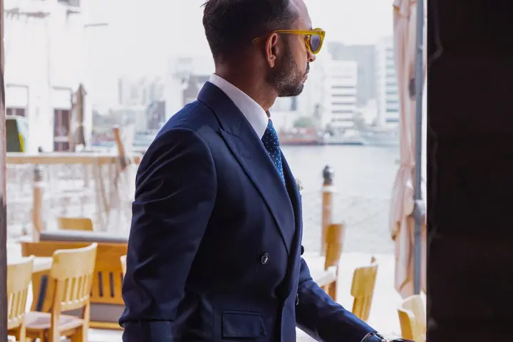
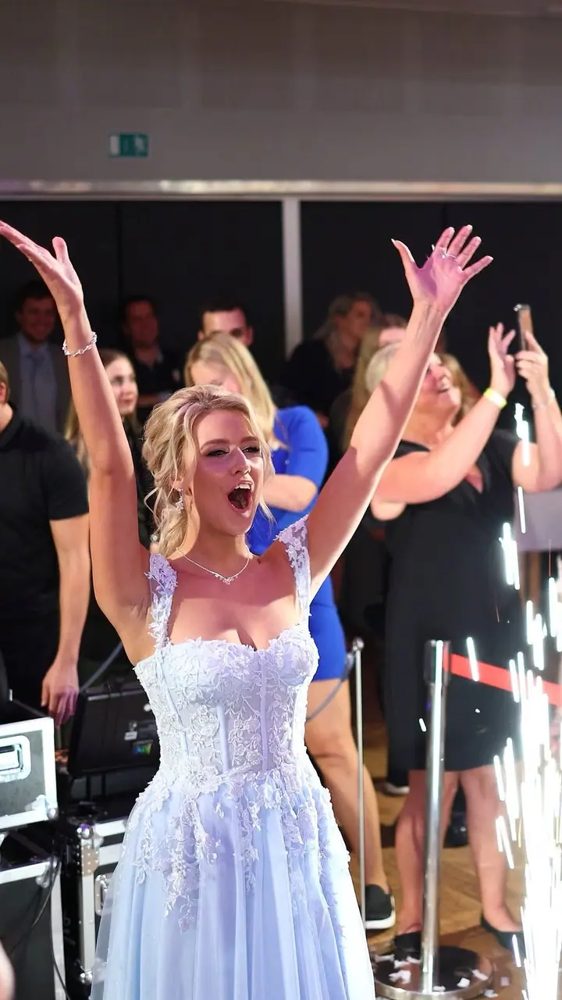
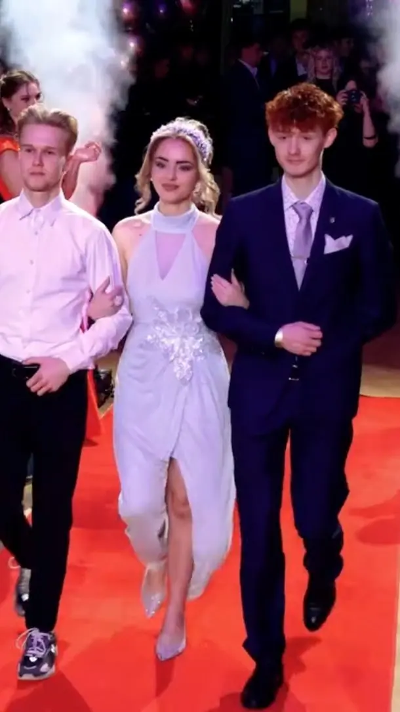

01 / 04
Svatební video
Natáčím celý den, od příprav nevěsty a ženicha až po večerní oslavu. Dostanete krátký klip na 3–5 minut, svatební film na 30–90 minut a záběry z dronu.
Zeptat se na termín→






Svatby a plesy ve filmovém střihu
Zeptat se na termín →(01) Ahoj
Jmenuji se Milan Ševčík a se svým týmem kameramanů a fotografů natáčím svatby , maturitní plesy i reportáže ze společenských akcí . Každý projekt beru osobně, od prvního záběru až po finální střih.
714lidí sleduje mou práci na Instagramu
200příspěvků s fotkami a příběhy
(02) Co fotím
01 / 04
Natáčím celý den, od příprav nevěsty a ženicha až po večerní oslavu. Dostanete krátký klip na 3–5 minut, svatební film na 30–90 minut a záběry z dronu.
Zeptat se na termín→02 / 04
Natáčím stylové záznamy a klipy z maturitních plesů a fotím reportáž z celého večera. Pro třídy, které si chtějí ples prožít znovu.
Zeptat se na termín→Dále nabízím
Natáčím promo videa pro firmy, organizace i obce, produktová videa pro e-shopy a výrobce a reportáže z konferencí, veletrhů nebo festivalů. Točím ve 4K, na přání i jako vertikální reel na sociální sítě.
↗Staré kazety převedu do digitální podoby, abyste o natočené vzpomínky nepřišli. Video vám nahraji na USB flash, nebo pošlu odkaz ke stažení.
↗(04) Postup
Od první zprávy po hotovou galerii.
Krok 1 z 4
Napište mi, co chystáte, a připište rovnou datum a místo akce. Odpovím vám rychleji a s konkrétní nabídkou.
Krok 2 z 4
Projdeme spolu, co od videa čekáte. U svateb vybíráte z balíčků, u firem připravím cenovou nabídku na míru.
Krok 3 z 4
V den akce točíme nenápadně a s profesionální technikou, aby nic nerušilo průběh a nic důležitého neuteklo.
Krok 4 z 4
Video sestříhám a doladím zvuk. Hotový výsledek dostanete online i offline, svatební klip na přání nahraji na YouTube jako veřejné nebo skryté video.
Fotky jsou krásné, ale jen video zachytí hlasy, emoce a pohyb.
(05) Za objektivem
Pod značkou Video Ševčík natáčím a fotím po celé České republice i v zahraničí. Zázemí mám v Sezimově Ústí a jako živnostník podnikám od roku 1992. Nepracuji sám, mám kolem sebe tým kameramanů a fotografů, se kterými se dobře známe a na place si rozumíme.
Natáčení svateb je pro mě hlavní práce a zároveň velký koníček. Pracuji nenápadně, abych nerušil průběh dne, a používám profesionální techniku, aby byl čistý obraz i zvuk. Fotky jsou krásné, ale jen video zachytí atmosféru, hlasy a pohyb.
Kromě svateb a maturitních plesů točím firemní, produktová a promo videa, reportáže z akcí a vyrábím videopořady. A když doma najdete staré kazety VHS, pomůžu vám zachránit i tyhle vzpomínky.
Milan
Milan Ševčík · Kameraman a fotograf svateb, plesů a firem
Natáčet může jeden nebo dva kameramani a vybrat si můžete 8 nebo 12 hodin natáčení. Úpravy na přání jsou samozřejmě možné.
Ano. Spolupracuji se svatebním fotografem, se kterým tvoříme sehraný tým, takže máte foto i video z jedné ruky.
Natáčíme a fotíme po celé České republice i v zahraničí. Zázemí máme v Sezimově Ústí.
Ceny vám pošlu e-mailem. Pomůže, když v poptávce uvedete datum a místo konání akce, u firemních videí připravím nabídku na míru.
V poptávce mi napište, jak kazety doručíte a jestli chcete video nahrát na USB flash, nebo vám stačí odkaz ke stažení.
(07) Kontakt
Napište pár vět o tom, co si představujete, a termín, který se vám hodí.
info@videosevcik.cz